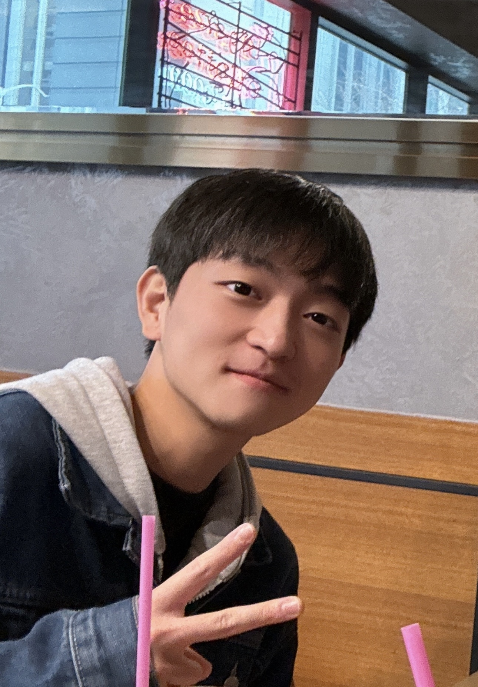

출생 : 2001년 11월 14일
거주지 : 서울시 서초구
국적 : 대한민국
본관 : 순흥 안씨
학력 : 홍익대학교 (컴퓨터공학과/재학)
병역 : 육군 제50보병사단 병장 만기전역
(해안경계부대 기관총사수)
좋아하는 드라마 : 미드에 Breaking Bad, Friends, White Collar 추천해요 한번씩 봐보길,,
좋아하는 영화 : 최근에 홍콩 영화 재밌게 봤습니다. 영웅본색, 중경삼림 추천..!!
(귀염뽀짝 한 영화는 최근에 디즈니 엘리멘탈 재밌게 봤어요)
좋아하는 음악 : 브릿팝쪽 좋아합니다( Oasis , Catfish & the Bottlemen )
(+오아시스 해체하고 서로 따로 음원낸거도 좋습니다,, 한번씩 들어보시길)
취미 : 기타치는거 좋아합니다